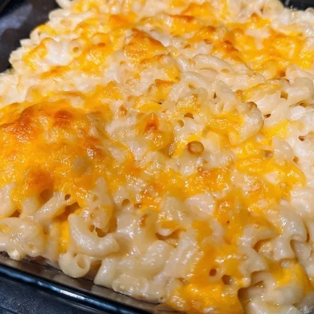

Home
Mac and Cheese

Description
This Mac and Cheese recipe is originally pulled from here, courtesy of Allrecipes. This is a simple Chic Fil A Mac and Cheese style recipe.
Ingredients
- 8 ounces elbow macaroni, or other short pasta (shells or fusilli)
- 1 1/2 tablespoons unsalted butter
- 2 1/2 tablespoons flour
- 10 ounces evaporated milk
- 1/2 teaspoons Worcestershire sauce
- 1 1/2 teaspoons Dijon mustard
- salt to taste
- 1/4 cup plus 2 tablespoons grated Italian Cheddar (such as Sartore MontAmoré® Cheddar), divided
- 1/4 cup plus 2 tablespoons grated Gruyère cheese, divided
- 1/4 cup plus 2 tablespoons fontina, divided
- 1/4 cup plus 2 tablespoons sharp Cheddar, divided
- 2 (0.9 ounce) pieces Brie cheese, rind removed tablespoons milk
Directions
- Fill a large pot with lightly salted water and bring to a rolling boil. Stir in pasta and return to a boil. Cook, uncovered, stirring occasionally, until tender yet firm to the bite, 6 to 8 minutes.
- Preheat the oven to 350 degrees F (175 degrees C). Lightly spray a 9x9-inch baking dish with cooking spray.
- Meanwhile, melt butter in a heavy saucepan over medium-low heat. Whisk in flour until mixture is a smooth paste and no lumps remain. Slowly pour in evaporated milk, whisking continuously. Whisk in Worcestershire, Dijon mustard, and salt, and cook until slightly thickened, about 2 minutes.
- Add in the 1/4 cup each MontAmoré® Cheddar, Gruyère, fontina, and sharp Cheddar. Remove rind from Brie. Add Brie to the sauce, and stir until all cheese is melted, about 1 minute.
- Drain pasta and add to the cheese sauce. Pour half of the macaroni and cheese into the prepared baking dish.
- Toss remaining 2 tablespoons each of MontAmoré® Cheddar, Gruyère, fontina, and sharp Cheddar together in a small bowl; sprinkle half of cheese mixture over pasta. Pour remaining pasta into the dish; sprinkle remaining cheese mixture over the top.
- Bake, uncovered, in the preheated oven until cheese is golden, about 25 minutes.